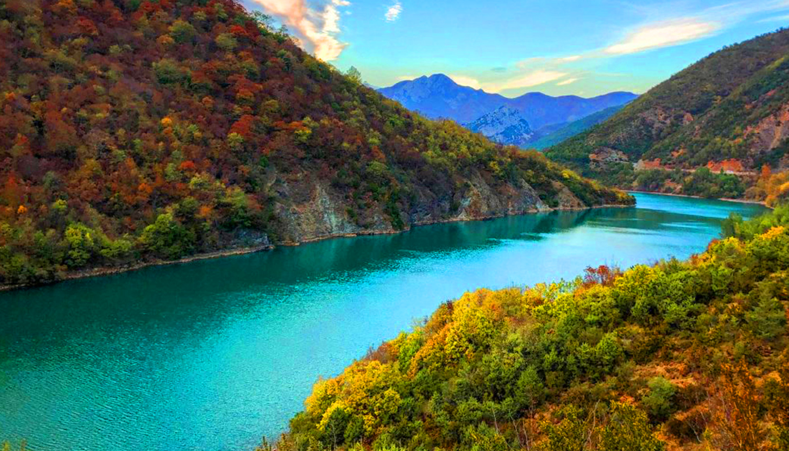

Dibër

Informacion për Dibrën
Informacione të përgjithshme
Vendndodhja: Shqipëria veri-lindore
Popullsia: Rreth 113,000 banorë
Qarku: Qarku i Dibrës
Statusi UNESCO: Zona e Dibrës ka zona natyrore të mbrojtura, por nuk ka status të veçantë UNESCO.
Pse është i veçantë Dibra
Dibra njihet për peizazhet e saj malore të bukura, lumenjtë e pasur dhe trashëgiminë kulturore që përfshin tradita të lashta dhe festa folklorike. Është një rajon me natyrë të paprekur dhe histori të pasur.
Vendet kryesore për të vizituar
- Kalaja e Drishtit: Një kështjellë e vjetër mes maleve, e rëndësishme historikisht.
- Liqeni i Debarit: Një liqen artificial me peizazhe të bukura dhe mundësi për sporte ujore.
- Parku Kombëtar Lurë: Një nga parkët më të mëdhenj natyrorë në Shqipëri, me pyje të dendura dhe liqene akullnajore.
- Fshati Maqellarë: I njohur për traditat dhe arkitekturën e vjetër shqiptare.
Trashëgimi kulturore dhe fetare
Dibra është një zonë me tradita të forta kulturore dhe fetare, ku bashkëjetojnë komunitete të ndryshme me besime të ndryshme, duke ruajtur një harmoni tradicionale dhe festa folklorike të njohura në mbarë vendin.
Produkte vendase
- Mjalti dhe produkte bletarie: Zona është e njohur për mjaltin natyral dhe produktet e tjera të bletarisë.
- Djathërat malorë: Djathëra tradicionalë të prodhuar nga qumështi i lopës dhe dhiut.
- Ushqimi tradicional: Provo byrekun, petullat dhe gatimet me mish dhe perime malore.
Natyra dhe aktivitetet
- Parku Kombëtar Lurë: Ecje, eksplorim natyre, shikim i liqeneve akullnajore.
- Liqeni i Debarit: Mundësi për peshkim dhe sporte ujore.
Moti në Peshkopi:
PESHKOPI WEATHER
Përshkrim i shkurtër: Peshkopia është qyteti më i madh i rajonit të Dibrës, i vendosur në verilindje të Shqipërisë, pranë kufirit me Maqedoninë e Veriut. I rrethuar nga male të larta dhe pyje të dendura, qyteti ofron mundësi të shumta për turizëm malor dhe relaksim. Peshkopia është gjithashtu e njohur për burimet e saj termale dhe për festivale tradicionale që pasqyrojnë kulturën e pasur të rajonit.
🌟 Aktivitetet kryesore turistike:
- Vizitë në Bazarin e Vjetër: Një zonë historike me rrugë të ngushta dhe shtëpi tradicionale, ku mund të shijoni atmosferën autentike të qytetit.
- Shëtitje në Bulevardin Elez Isufi: Një bulevard i këndshëm i mbushur me pemë linden, i përshtatshëm për shëtitje dhe relaksim.
- Vizitë në Muzeun e Dibrës: Ky muze ofron një koleksion të pasur të kostumeve tradicionale, qilimave dhe objekteve të tjera që pasqyrojnë historinë dhe kulturën e rajonit.
- Relaksim në Llixhat e Peshkopisë: Burimet termale me ujëra me temperaturë 35–43.5°C, të njohura për vetitë e tyre shëruese. Ato ndodhen rreth 2 km në lindje të qytetit dhe janë të hapura për vizitorët gjatë gjithë vitit.
- Eksplorim i Parkut Kombëtar Lurë-Dejë: Ky park ofron mundësi për hiking, kamping dhe shijimin e peizazheve malore të mrekullueshme.
- Vizitë në Fshatin Radomirë: Një fshat i njohur për artizanatin e tij të drurit dhe arkitekturën tradicionale, ku mund të shijoni mikpritjen e ngrohtë të banorëve lokalë.
- Eksplorim i Shpellave të Shpellës: Shpella të mrekullueshme me formacione shkëmbore unike, të vendosura disa kilometra jashtë qytetit.
- Vizitë në Tekken e Bektashinjve: Një vend i shenjtë i rendit Bektashi, ku mund të mësoni rreth traditave dhe besimeve të këtij komuniteti.
Moti në Arras:
ARRAS WEATHER
Përshkrim i shkurtër: Arras është një fshat malor i vendosur në veri-lindje të Shqipërisë, në qarkun Dibër, rreth 10 km larg qytetit të Peshkopisë. Ky fshat ofron një përvojë autentike të jetës rurale shqiptare, me peizazhe të mrekullueshme, ujëra të pastra dhe një kulturë bujqësore të theksuar. Arras është gjithashtu i njohur për mikpritjen e ngrohtë të banorëve të tij dhe për mundësitë e shumta për turizëm malor dhe agroturizëm.
🌿 Aktivitetet kryesore turistike:
- Agroturizëm në Guesthouse Arber: Një mundësi për të përjetuar jetën tradicionale shqiptare, duke shijuar ushqime organike dhe duke marrë pjesë në aktivitete bujqësore. Vizitorët mund të shijojnë mikpritjen e ngrohtë të familjes Marku dhe të eksplorojnë rajonin malor.
- Shëtitje pranë lumit Drin i Zi: Lumi ofron mundësi për shëtitje, peshkim dhe eksplorim të biodiversitetit të pasur. Në mëngjes, uji është i pastër dhe i qetë, ideal për snorkeling dhe vëzhgim të specieve të ndryshme të peshqve.
- Vizitë në Muzeun Skënderbeu: Një muze që pasqyron historinë dhe trashëgiminë kulturore të rajonit, duke ofruar një kuptim më të thellë të identitetit shqiptar.
- Ekskursione në kanionet e Setes: Një mundësi për të eksploruar formacionet gjeologjike dhe për të shijuar bukurinë natyrore të rajonit. Këto kanione janë të njohura për peizazhet e tyre dramatike dhe për mundësitë për hiking dhe fotografi.
- Vëzhgimi i shpendëve: Rajoni është i pasur me lloje të ndryshme shpendësh, duke përfshirë oriole të arta dhe shqiponja të arta. Një mundësi e shkëlqyer për entuziastët e natyrës dhe fotografët.
📍 Si të arrini në Arras:
- Nga Peshkopia: Arras është rreth 10 km larg Peshkopisë, duke ofruar mundësi për shëtitje ditore dhe eksplorim të rajonit.
- Nga Kukësi: Rreth 39 km larg, Kukësi ofron mundësi për të eksploruar qytetin dhe rrethinat e tij.
- Nga Tirana: Rreth 61.7 km larg, Tirana është pika më e afërt ndërkombëtare për t'u lidhur me Arras.
Moti në Maqellarë:
MAQELLARË WEATHER
Përshkrim i shkurtër: Maqellarë është një fshat malor i vendosur në veri-lindje të Shqipërisë, në qarkun Dibër, rreth 10 km larg qytetit të Peshkopisë. Ky fshat ofron një përvojë autentike të jetës rurale shqiptare, me peizazhe të mrekullueshme, ujëra të pastra dhe një kulturë bujqësore të theksuar. Maqellarë është gjithashtu i njohur për mikpritjen e ngrohtë të banorëve të tij dhe për mundësitë e shumta për turizëm malor dhe agroturizëm.
🌿 Aktivitetet kryesore turistike:
- Agroturizëm në Guesthouse Arber: Një mundësi për të përjetuar jetën tradicionale shqiptare, duke shijuar ushqime organike dhe duke marrë pjesë në aktivitete bujqësore. Vizitorët mund të shijojnë mikpritjen e ngrohtë të familjes Marku dhe të eksplorojnë rajonin malor.
- Shëtitje pranë lumit Drin i Zi: Lumi ofron mundësi për shëtitje, peshkim dhe eksplorim të biodiversitetit të pasur. Në mëngjes, uji është i pastër dhe i qetë, ideal për snorkeling dhe vëzhgim të specieve të ndryshme të peshqve.
- Vizitë në Muzeun Skënderbeu: Një muze që pasqyron historinë dhe trashëgiminë kulturore të rajonit, duke ofruar një kuptim më të thellë të identitetit shqiptar.
- Ekskursione në kanionet e Setes: Një mundësi për të eksploruar formacionet gjeologjike dhe për të shijuar bukurinë natyrore të rajonit. Këto kanione janë të njohura për peizazhet e tyre dramatike dhe për mundësitë për hiking dhe fotografi.
- Vëzhgimi i shpendëve: Rajoni është i pasur me lloje të ndryshme shpendësh, duke përfshirë oriole të arta dhe shqiponja të arta. Një mundësi e shkëlqyer për entuziastët e natyrës dhe fotografët.
📍 Si të arrini në Maqellarë:
- Nga Peshkopia: Arras është rreth 10 km larg Peshkopisë, duke ofruar mundësi për shëtitje ditore dhe eksplorim të rajonit.
- Nga Kukësi: Rreth 39 km larg, Kukësi ofron mundësi për të eksploruar qytetin dhe rrethinat e tij.
- Nga Tirana: Rreth 61.7 km larg, Tirana është pika më e afërt ndërkombëtare për t'u lidhur me Arras.
Moti në Zall-Dardhë:
ZALL-DARDHË WEATHER
Përshkrim i shkurtër: Zall-Dardhë është një fshat malor i vendosur në veri-lindje të Shqipërisë, në qarkun Dibër, rreth 10 km larg qytetit të Peshkopisë. Ky fshat ofron një përvojë autentike të jetës rurale shqiptare, me peizazhe të mrekullueshme, ujëra të pastra dhe një kulturë bujqësore të theksuar. Zall-Dardhë është gjithashtu i njohur për mikpritjen e ngrohtë të banorëve të tij dhe për mundësitë e shumta për turizëm malor dhe agroturizëm.
🌿 Aktivitetet kryesore turistike:
- Agroturizëm në Guesthouse Arber: Një mundësi për të përjetuar jetën tradicionale shqiptare, duke shijuar ushqime organike dhe duke marrë pjesë në aktivitete bujqësore. Vizitorët mund të shijojnë mikpritjen e ngrohtë të familjes Marku dhe të eksplorojnë rajonin malor.
- Shëtitje pranë lumit Drin i Zi: Lumi ofron mundësi për shëtitje, peshkim dhe eksplorim të biodiversitetit të pasur. Në mëngjes, uji është i pastër dhe i qetë, ideal për snorkeling dhe vëzhgim të specieve të ndryshme të peshqve.
- Vizitë në Muzeun Skënderbeu: Një muze që pasqyron historinë dhe trashëgiminë kulturore të rajonit, duke ofruar një kuptim më të thellë të identitetit shqiptar.
- Ekskursione në kanionet e Setes: Një mundësi për të eksploruar formacionet gjeologjike dhe për të shijuar bukurinë natyrore të rajonit. Këto kanione janë të njohura për peizazhet e tyre dramatike dhe për mundësitë për hiking dhe fotografi.
- Vëzhgimi i shpendëve: Rajoni është i pasur me lloje të ndryshme shpendësh, duke përfshirë oriole të arta dhe shqiponja të arta. Një mundësi e shkëlqyer për entuziastët e natyrës dhe fotografët.
📍 Si të arrini në Zall-Dardhë:
- Nga Peshkopia: Zall-Dardhë është rreth 10 km larg Peshkopisë, duke ofruar mundësi për shëtitje ditore dhe eksplorim të rajonit.
- Nga Kukësi: Rreth 39 km larg, Kukësi ofron mundësi për të eksploruar qytetin dhe rrethinat e tij.
- Nga Tirana: Rreth 61.7 km larg, Tirana është pika më e afërt ndërkombëtare për t'u lidhur me Zall-Dardhë.
Moti në Burrel:
BURREL WEATHER
Përshkrim i shkurtër: Burrel është qyteti kryesor i rajonit të Matit, i vendosur në veri të Shqipërisë, rreth 91 km larg Tiranës. I njohur për historinë e tij të pasur, Burrel ka qenë një qendër e rëndësishme gjatë periudhës ilire dhe ka luajtur një rol të rëndësishëm gjatë regjimit komunist. Sot, qyteti ofron një përzierje të bukur të trashëgimisë kulturore dhe natyrës së paprekur, duke e bërë atë një destinacion tërheqës për turistët që kërkojnë të eksplorojnë Shqipërinë autentike.
🌿 Aktivitetet kryesore turistike:
- Shëtitje në Parkun e Mbretëreshës Geraldinë: Një park i bukur dhe i qetë në qendër të qytetit, ideal për relaksim dhe shëtitje pasdite.
- Vizitë në Muzeun Historik të Matit: Ky muze ofron një koleksion të pasur të artefakteve arkeologjike dhe etnografike që pasqyrojnë historinë dhe kulturën e rajonit.
- Ura e Pellumbasit: Një urë e bukur mbi lumin Erzen, e rrethuar nga natyra e paprekur, e përshtatshme për shëtitje dhe piknikë.
- Shkëlzen Mosque: Një shembull i bukur i arkitekturës islame në zemër të qytetit, e njohur për dizajnin e saj elegant dhe atmosferën e qetë.
- Vizitë në Burgun e Burrelit: Një nga burgjet më të njohura të periudhës komuniste, tani një vend historik që tregon përjetimet e të burgosurve politikë gjatë regjimit.
📍 Si të arrini në Burrel:
- Nga Tirana: Rreth 91 km larg, mund të arrini me makinë ose autobus, duke kaluar përmes rrugës së re të Arbërit që ka zvogëluar ndjeshëm kohën e udhëtimit.
- Nga Kukësi: Rreth 100 km larg, mund të arrini përmes rrugëve malore që ofrojnë pamje spektakolare të natyrës.
- Nga Shkodra: Rreth 120 km larg, mund të arrini përmes rrugës që kalon përmes qytetit të Pukës dhe ofron pamje të bukura të maleve dhe lumenjve.
Moti në Klos:
KLOS WEATHER
Përshkrim i shkurtër: Klos është një qytet i vogël i vendosur në veri-qendër të Shqipërisë, në qarkun Dibër. I rrethuar nga malet e bukura të vargmalit të Skënderbeut, Klos ofron një përvojë autentike të jetës rurale shqiptare. Qyteti është i njohur për historinë e tij të pasur, duke përfshirë lidhjet me heronjtë kombëtarë dhe trashëgiminë kulturore të rajonit.
🌿 Aktivitetet kryesore turistike:
- Ura e Vashës (Ura e Vashës): Një urë historike e ndërtuar në shekullin e 18-të mbi lumin Mat, e cila është shpallur zonë e mbrojtur për rëndësinë e saj kulturore dhe natyrore.
- Kalaja e Guri i Bardhë: Një kalë historik që ndodhet poshtë fshatit Guri i Bardhë dhe sipër fshatit Fshat, i njohur për lidhjet e tij me Kastriotët dhe historinë e pasur të rajonit.
- Parku Kombëtar i Qafë Shtamë: Një park natyror me peizazhe malore, pyje pishash dhe liqene, ideal për shëtitje, kamping dhe eksplorim të natyrës.
- Liçi i Shkopetit: Një liqen i bukur afër Klosit, i njohur për mundësitë e peshkimit, notit dhe piknikëve në natyrë.
- Ura e Vashës: Një urë historike e ndërtuar në shekullin e 18-të mbi lumin Mat, e cila është shpallur zonë e mbrojtur për rëndësinë e saj kulturore dhe natyrore.
- Kalaja e Guri i Bardhë: Një kalë historik që ndodhet poshtë fshatit Guri i Bardhë dhe sipër fshatit Fshat, i njohur për lidhjet e tij me Kastriotët dhe historinë e pasur të rajonit.
📍 Si të arrini në Klos:
- Nga Tirana: Rreth 28.5 km larg, mund të arrini me makinë ose autobus, duke kaluar përmes rrugës së re të Arbërit që ka zvogëluar ndjeshëm kohën e udhëtimit.
- Nga Burreli: Rreth 14 km larg, mund të arrini përmes rrugëve malore që ofrojnë pamje spektakolare të natyrës.
- Nga Kukësi: Rreth 100 km larg, mund të arrini përmes rrugëve që kalojnë përmes qytetit të Pukës dhe ofrojnë pamje të bukura të maleve dhe lumenjve.